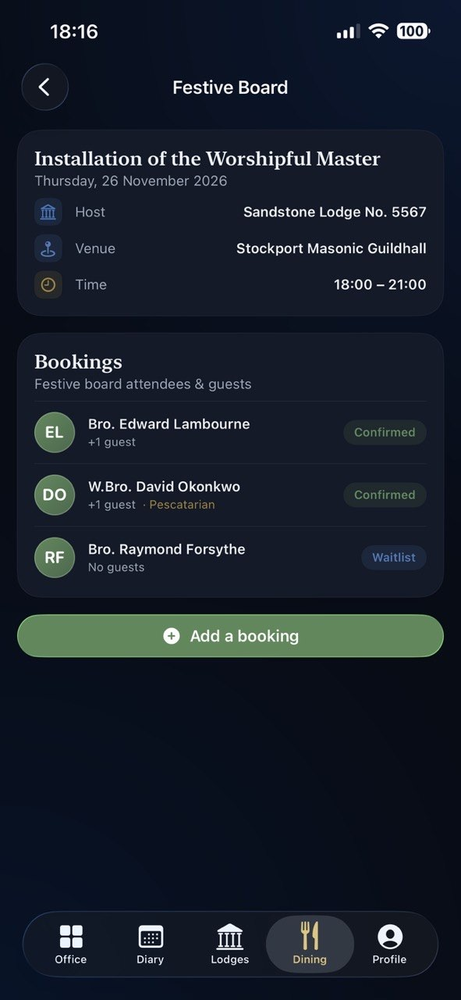

Seven parts, one record.
Provendium® is organised into seven parts that share one record, one sign-in and one set of permissions. A Province switches on the parts it wants, when it is ready for them.
The Provincial record
Everything else depends on this. Provendium holds one record for every Brother and Companion and every Lodge and Chapter, trusted by every report, email and calendar.
- One record for each member, for life
- Craft and Royal Arch, every Lodge and Chapter, every office and rank. A Brother appears once, wherever he serves.
- Kept current every day
- The record is refreshed daily from the membership records your Province already keeps. A file that looks wrong is held back, and a backup is taken first.
- Registers in order of precedence
- Every unit's officers, with the full establishment shown filled and vacant, and the Provincial officers with Acting and Past ranks.
- Worklists for the Office
- Units missing a venue, a Secretary or contact details are listed to be put right, not guessed at.
- A career history you can export
- Each member's offices and memberships over time, as a summary without contact details.
A. Hartley: record of service
Illustrative- 2026Worshipful MasterLodge of St John No. 104Craft
- 2025 to 26Senior WardenLodge of St John No. 104Craft
- 2022ExaltedChapter of Harmony No. 58Royal Arch
- 2016InitiatedLodge of St John No. 104Craft
Meetings and the Provincial diary
Every meeting, from regular meetings to Provincial celebrations, planned once and published everywhere.
- A diary that fills itself in
- Each Lodge and Chapter's meetings are created from the pattern it meets on. Secretaries confirm the work and publish. Clashes and duplicates are caught.
- Published everywhere from one place
- Your Provincial website, individual Lodge and Chapter websites, and members' own phone and Outlook calendars, by subscription.
- Provincial celebrations
- Anniversaries, awards and centenaries, with the team invited by email, one-click replies, attendance tracked and a list of who to chase.
- Ticketing
- Add tickets, paid or free, to any event. Members book with their Provendium sign-in, so there is no form to fill in and no separate guest list. Allocations, waiting lists, dining choices and seating follow from the booking.
- The Director of Ceremonies diary
- A DC assigned to each meeting, tasks for each, printable attendance lists and last-minute changes.
- Find a Lodge or Chapter
- A map of where every unit meets, with directions and what3words, and a filter by the work being done.
Provincial Grand Lodge, Annual meeting
ProvincialSaturday 13 June 2026, 2:00pm, Provincial Hall
- Meeting only212 of 300 bookedFree
- Meeting and luncheon160 of 160 booked, 9 on the waiting listFull
Calendar subscriptions
- Provincial diaryAll Lodges and ChaptersSubscribe
- Lodge of St John No. 104Your LodgeSubscribe
- My meetingsA private feed of your ownSubscribed
Lodge and Chapter administration
The Secretary's paperwork, in the same platform and working from the same records. Each Lodge and Chapter decides whether to use these tools.
- The Summons Builder
- The summons is generated from the Lodge's records instead of being edited by hand in Word every month. It keeps the Lodge's established printed layout, and the same data produces an accessible web version and PDF.
- Errors prevented at source
- The officer-year heading is always current, ranks are written consistently, dates are formatted one way, and the minutes date comes from the previous meeting.
- Business driven by the record
- Ballots, initiations, passings and raisings come from the candidates' own records, as numbered items you can reorder. The Past Masters roll composes itself.
- Installation handled for you
- The system proposes the new officer year, with everyone progressing to their next office. The Secretary reviews and confirms.
- Every issue kept
- Issued summonses are kept as versions, stored with the meeting they belong to, with a record of who changed what.
Summons: Installation, 10 June
Issued, version 3Lodge of St John No. 104. Officers for 2025 to 2026.
- To open the Lodge.
- To confirm the minutes of the meeting held on Wednesday 13 May 2026.
- To ballot for Mr J. Ellison, a candidate for initiation.
- To install the Master Elect, Bro. A. Hartley.
- To invest the officers for the ensuing year.
- To close the Lodge.
Dining and hospitality
From the member's reply to the place card in front of him.
- Dining asked with the reply
- Attendance and dining are two separate answers, and dietary requirements are gathered at the same time.
- Seating plans
- Arrange the festive board by hand or let it be arranged by precedence. Room layouts are saved for each venue and can be reused.
- Place cards and table cards
- Printed from the plan, with nothing retyped.
- A dietary sheet for the caterer
- Dietary and allergy details are held encrypted, as the sensitive information they are, and set out for the kitchen.
Festive board: seating
41 diningLeadership and reporting
What the Rulers, the Office and the Areas need to run the Province, on screen, as a spreadsheet or as a PDF.
- Membership reporting
- Gains and losses by month and by year, split by Area and by the kind of joiner or leaver, with a summary for each Lodge and Chapter.
- Installation Representatives
- Representatives assigned to each Installation, with the Representative and the unit told automatically, and again if anything changes.
- Reports for the Office
- Officers, the Lodge directory, the meeting schedule, replies to invitations, communications sent and the state of the data.
- Access that follows the role
- Members, Provincial leadership and the Office each see what their role needs, and Area leaders see their own Areas.
Membership by Area, year to date
Craft| Area | Joined | Left | Net |
|---|---|---|---|
| Area 1 | 11 | 6 | +5 |
| Area 2 | 7 | 9 | -2 |
| Area 3 | 9 | 5 | +4 |
| Area 4 | 6 | 7 | -1 |
| Area 5 | 5 | 4 | +1 |
The member's own view, and the Provendium app
Provendium is for every member of the Province, not only the Office and the leadership.
- Your meetings
- Every meeting of your own Lodges and Chapters, with the work, the venue, directions and the summons.
- Invitations with one-click replies
- Attending, dining and dietary needs, answered from the email or the app.
- The whole Province's diary
- Every Craft and Royal Arch meeting, searchable by Area, unit and work.
- The Provendium app for iPhone
- Written for iOS, so it feels like the rest of the phone. Meetings, directions and seating are kept on the phone, so they are there with no signal at the venue.
- Reminders you control
- Invitations, reminders and change notices, with each member choosing what they receive and when.


The platform and the Provendium API
The API is how your website and other Provincial services work with Provendium's data safely, without keeping their own copies of it.
- One sign-in
- For members, leaders and the Office: by a secure email link, by password, or by passkey with Face ID or Touch ID.
- Calendar feeds
- Any member can subscribe to the Province, an Area, a unit, a role or their own diary from any phone or calendar app.
- Website feeds
- Secure feeds power the calendar and the Lodge directory on your Provincial website and on Lodge and Chapter websites. Each is limited to the websites you approve, and its key can be changed at any time.
- Connections for Provincial services
- An approved service can read the meetings, units or events it needs, be told when something changes, and let members sign in with their Provendium account.
- The same rules everywhere
- Every connection follows the member's role, each Province's data stays separate, and the Province decides who may connect.
Connections
Key last changed 2 June 2026- Provincial website calendarwww.your-province.org.ukApproved
- Lodge of St John No. 104 websiteCalendar and officersApproved
- Provendium appMembers sign in as themselvesApproved
- Provincial charity siteSign in with ProvendiumAwaiting the Office
Start from the records you already keep
Provendium begins from a Province's existing membership records: Brethren, units, memberships, offices, ranks and the forward calendar. There is no starting from a blank sheet, and imports are checked before they are applied.
The people who administer your Province recognise their own Lodges and Brethren from the first day, which is the quickest way to know the system is right.
See it with your own Province in mind.
Tell us your Province and what you would like to know. We read every message and reply ourselves.